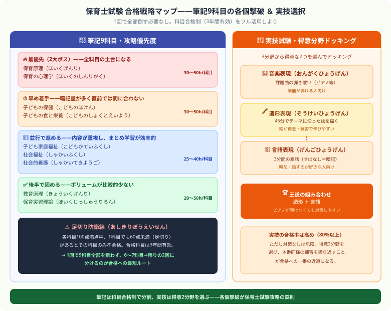

こんにちは、大谷です！「子どもの未来を守る保育士を取ろう！」と決意して、いざテキストを開いた瞬間……「うわっ、なんじゃこりゃ、筆記が9科目もある上に、1科目でも60点未満なら足切りゲームオーバーって無理ゲーじゃん！」とフリーズしていませんか？（笑）
毎日会計士という超巨大な難関資格と格闘している僕の視点から、この膨大な科目の山をゲーム感覚でサクッと2回に分けて切り崩し、確実に合格をもぎ取るための「9科目各個撃破・独学逆算スケジュール」を優しくナビゲートします！
また、記事の末尾のほうにある【いいねボタン】をポチッと押してもらえると、めちゃくちゃ励みになりますしすごく嬉しいです！それでは、一緒に攻略していきましょう！
保育士試験は筆記9科目＋実技試験という構成で、合格率は例年20〜25%です。ただし科目合格制があるため、2〜3回に分けて取り切ることができます。独学でも合格者が多い試験ですが、9科目の範囲の広さが最大の壁です。本記事では科目別の優先順位と効率的な学習法を解説します。
| 項目 | 内容 |
|---|---|
| 試験実施 | 年2回（前期：4〜5月 / 後期：10〜11月） |
| 筆記試験 | 9科目（各100点満点、60点以上合格） |
| 実技試験 | 音楽・造形・言語の3分野から2分野選択（50点満点×2） |
| 合格基準 | 筆記全9科目合格＋実技2分野60%以上 |
| 合格率 | 20〜25%（筆記の全科目合格が難しい） |
| 科目合格の有効期間 | 合格した科目は3年間有効 |
| 受験資格 | 大学・短大卒業者、または高卒で2年以上の児童福祉施設勤務経験者 など |
| 科目 | 目安勉強時間 | 難易度 | 攻略ポイント |
|---|---|---|---|
| 保育の心理学 | 30〜50時間 | ★★★☆☆ | 発達段階・愛着理論・心理学者の名前を整理 |
| 保育原理 | 30〜50時間 | ★★★☆☆ | 保育所保育指針を読み込む。改定年度に注意 |
| 子ども家庭福祉 | 30〜50時間 | ★★★★☆ | 児童福祉法・各種制度の根拠法を覚える |
| 社会福祉 | 25〜40時間 | ★★★☆☆ | 社会保障の仕組み・保険の種類を体系的に |
| 教育原理 | 20〜30時間 | ★★★☆☆ | 教育思想家の名前と主張をセットで覚える |
| 社会的養護 | 20〜30時間 | ★★★☆☆ | 施設種別の特徴・措置制度の仕組み |
| 子どもの保健 | 30〜50時間 | ★★★★☆ | 疾患・予防接種・発育の数値を正確に覚える |
| 子どもの食と栄養 | 25〜40時間 | ★★★★☆ | 栄養素の機能・食事摂取基準の数字が頻出 |
| 保育実習理論 | 30〜50時間 | ★★★☆☆ | 楽典（音楽理論）と造形・言語の実践知識 |

| 優先度 | 科目 | 理由 |
|---|---|---|
| 最優先 | 保育原理・保育の心理学 | 他科目との関連が深く、ここを固めると全体の理解が上がる |
| 早めに着手 | 子どもの保健・子どもの食と栄養 | 暗記量が多く、直前では間に合わない |
| 並行で進める | 社会福祉・子ども家庭福祉・社会的養護 | 内容が重複する部分が多く、まとめて学習すると効率がいい |
| 後半で固める | 教育原理・保育実習理論 | 比較的ボリュームが少ない |
| 分野 | 内容 | 向いている人 | ポイント |
|---|---|---|---|
| 音楽表現 | 課題曲2曲をピアノ・ギター・アコーディオンで弾き歌い | 楽器が弾ける人 | 間違えても止まらず弾き続けることが採点基準 |
| 造形表現 | 当日発表のテーマで45分以内にカラー絵を描く | 絵が得意な人 | 人物・背景・色彩の3要素をすべて入れる |
| 言語表現 | 4つのお話から1つ選び3分以内に素話（暗記） | 暗記が得意・話すことが好きな人 | 絵本・小道具なしで3分ぴったりに話す練習が重要 |
音楽表現の実技試験でよく言われる「間違えても止まらず弾き続けること」というルール。単なる採点上のテクニックだと思われがちですが、これは保育の現場で本当に必要とされるスキルそのものです。
身近な例で考えてみましょう。生配信で歌っている途中に音を外してしまったとき、慌てて止まってやり直すより、そのまま自然に歌い続けた方が、聴いている人は安心して見ていられますよね。止まってしまう方が、かえって場の空気を壊してしまいます。
これを保育の現場に当てはめると、もっと重要性が分かります。子どもたちの前でピアノを弾いているときに間違えて演奏を止めてしまうと、子どもたちは不安になったり、集中が途切れて騒がしくなったりします。保育士に求められているのは「完璧に弾けること」ではなく、「多少のミスがあっても、子どもたちの前で堂々と最後までやり切れること」です。実技試験で「止まらず弾き続ける」ことが評価されるのは、この現場で本当に必要な力を測っているからなんです。
| 時期 | 学習内容 | 目安時間/週 |
|---|---|---|
| 10〜11月 | 全科目テキスト1周・試験の全体像をつかむ | 10〜12時間 |
| 12〜1月 | 一問一答で各科目の基礎知識を固める | 15〜18時間 |
| 2月 | 過去問3年分を解いて弱点科目を把握 | 18〜20時間 |
| 3月 | 弱点科目の集中補強＋実技の練習開始 | 20〜25時間 |
| 試験直前 | 模擬試験・実技の最終確認 | 25〜30時間 |
子どもの未来のために頑張るあなたを、心からリスペクトします
仕事や育児と両立しながら9科目という広大な範囲に立ち向かうのは、本当に大変なことです。それでもこの記事を最後まで読んでくれたあなたは、もう十分に本気で未来を切り開こうとしています。1科目ずつ確実に潰していけば、必ず合格に届きます。同じように猛勉強を頑張る仲間として、心から応援しています！僕の毎日の執筆モチベーション維持のために、この下にある【いいねボタン】をポチッと押してもらえると、めちゃくちゃ嬉しいです！